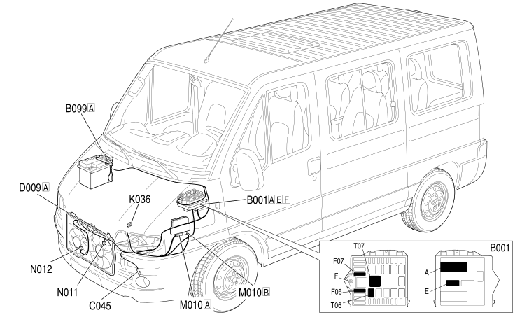

E5020 ENGINE COOLING COMPONENT LOCATION
- Path
- Electrical equipment > 1 ELECTRICAL FUNCTIONS > E50 ENGINE CONTROL AND MANAGEMENT SYSTEMS > E5020 ENGINE COOLING > E5020 ENGINE COOLING COMPONENT LOCATION
- Kind
- topic
- Applies to
- engines: 2.0 JTD 8V; all production periods
- Interactive page
- https://sloeber94.github.io/elrnDB-fDct/en/#/244001899
Applies to: engines: 2.0 JTD 8V; all production periods
Component location
